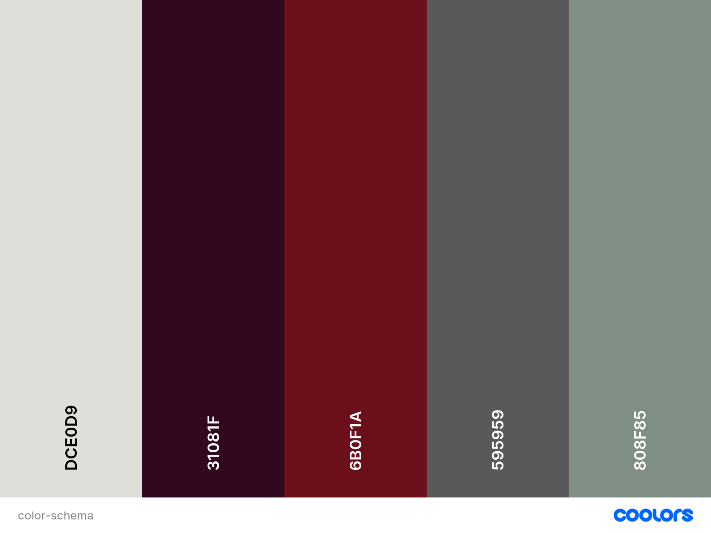

STC Chamber of Commerce
Site Purpose
The STC Chamber of Commerce is here to promote your business, educate you on business topics, and to be your advocate. By centering your business on the community, you access a whole network that will help your company to grow and prosper. Our's is a quickly growing community with much potential. Join the STC Chamber of Commerce today to be a part of this historic growth and prosperity.
Logo
Target Audience
This web page is targeted to those who want to invest and contribute our community. We expect all types of audience, from young entrepreneurs to senior investors. All kind of people are welcome to know more about what wee do in our community to make it grow as much as it can.
Personas
Person 1
This person wants to join the Chamber of Commerce community to improve the community and give suggestions to the owners of the differents shops and stores.
Person 2
This person would the owner of a company or a representative from it. His or her role is to review the suggestions from the community audience and to try to satisfy the consumer's desire in order to improve the company's name.
Scenarios
New member wants to join the community
Member wants to communicate with specific company
Member of the Chamber of Commerce wants to contact the web page support
Visitor in the web page wants to research businesses
User wants to see the next events
Design
Color schema
Colors used for the main STC Chamber of Commerce web
Typography
For headings: "Kanit"
For paragraphs and other text elements: "Open Sans"